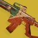

推荐者：
超新星赫沃斯托夫星火术士
 术士#row:elements/class-abilities/分节/术士 · 烈日 · 创意S29 · 凯旋纪念碑
术士#row:elements/class-abilities/分节/术士 · 烈日 · 创意S29 · 凯旋纪念碑
依靠神器和赫沃斯托夫的高频产球可实现常驻焕光，焕光状态造成伤害或击杀就可快速回转融合雷
适用环境
# 赫沃斯托夫星火术士 推荐人：超新星 描述：依靠神器和赫沃斯托夫的高频产球可实现常驻焕光，焕光状态造成伤害或击杀就可快速回转融合雷 更新：2026.9.10 场景：日常 分支：烈日 强度：创意 核心：赫沃斯托夫7G-0X ## 职业 职业：术士#row:elements/class-abilities/分节/术士 超能：光焰之井#2274196887 星相：地狱火#83039192、火焰之触#83039193 碎片：骨灰余烬#1051276349、喷发余烬#1051276348、起泡余烬#362132301、烧焦余烬#362132291、焦燃余烬#362132293 手雷：融合手雷#1013086087 近战：星界之火#1470370539 职业技能：治愈裂痕#25156515 ## 武器 异域武器：赫沃斯托夫7G-0X#4129629253 传说武器：笛卡尔坐标#3719824177 | 重建#1523832109、洪涝#1427256713、老兵睿智#2897898513 传说武器：巅峰捕食者#1851777734 | 爆破专家#3523296417、爆炸光能#3194351027、爆炸协议#1489048135 ## 护甲 异域护甲：星火协议#599049453 套装：玻璃拱顶#set:741162535 2 件 × 玻璃拱顶#set:741162535 4 件 头盔：充沛#2414626352、特殊武器弹药搜寻者#2595839237、重型弹药搜寻者#554409585 护臂：鼓舞爆弹#3726719281、火力无限#2485657760、火力无限#2485657760 胸甲：灼烧抗性#3194530172、虚空抗性#3410844187、震荡阻尼器#3719981603 腿部：支配#1750845415、回收利用#4294967305、绝缘#3325390304 职业物品：强力吸引#11126525、收割者#40751621、面面俱到#4039026690 ## 神器 神器：猎人日志 模组：元素虹吸#3116632771、能量扩散基质#3116632768、持续火力#255237659、瞄准自动填装器#2344320972、焕光能量球#2344320975、护盾粉碎#1533272844、烈日爆发#2344320973 ## 六维 六维：生命 0 ｜ 近战 70 ｜ 手雷 100～200 ｜ 超能 80～100 ｜ 职业 70～100 ｜ 武器 100～200 ## 注解 娱乐配装，打火机，强度有限，玩腻了meta可以来试试，打竞技场和猛攻低压光的活动还可以，主武器还是主手雷看个人喜好
职业
武器
神器模组
护甲
- 生命0
- 近战70
- 手雷100～200
- 超能80～100
- 职业70～100
- 武器100～200
注解
娱乐配装，打火机，强度有限，玩腻了meta可以来试试，打竞技场和猛攻低压光的活动还可以，主武器还是主手雷看个人喜好